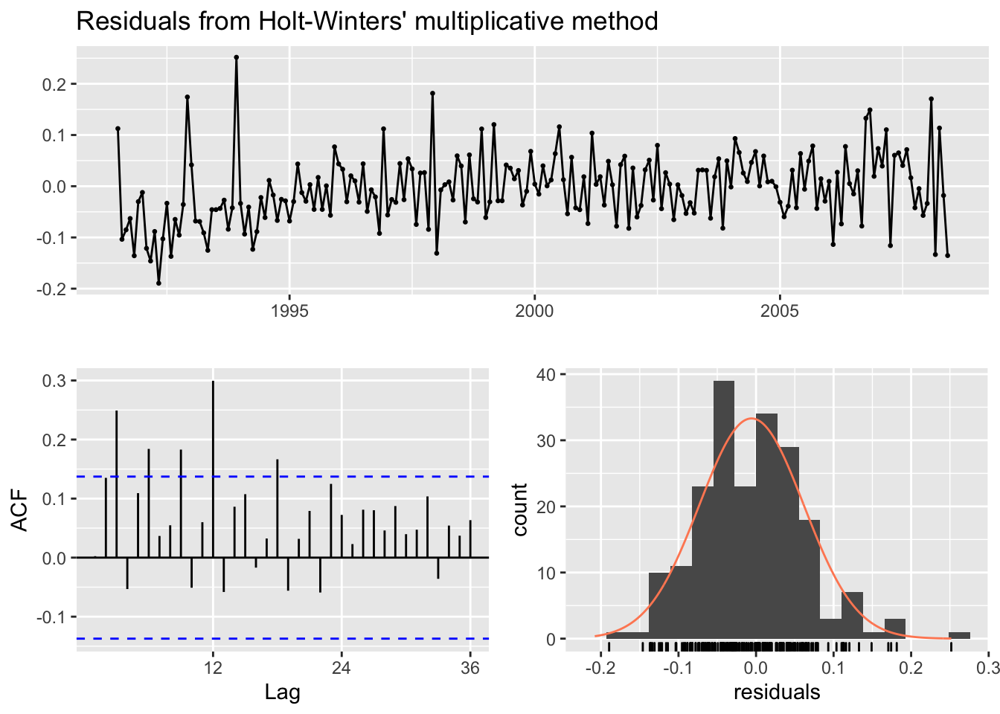
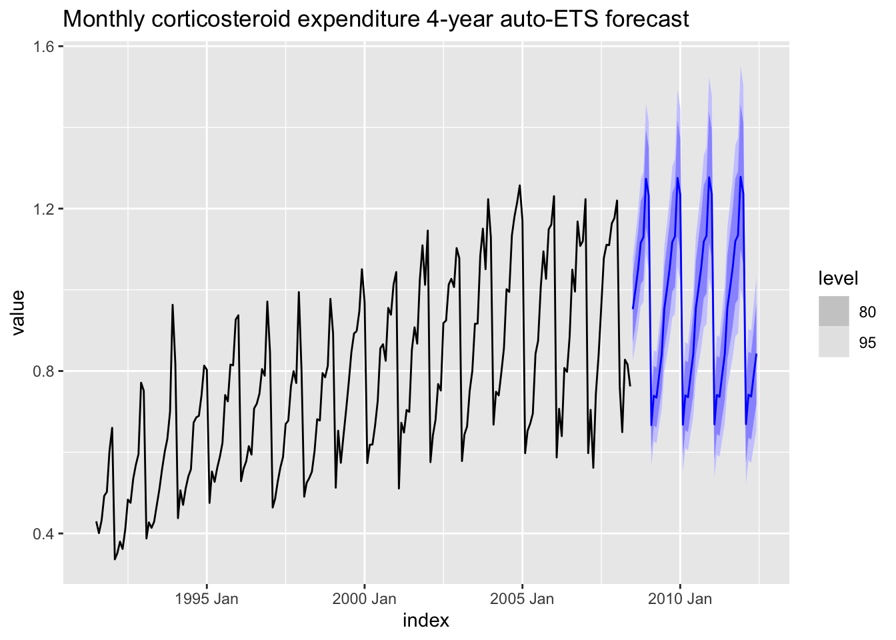

1. Set Up
1.1 Introduction
This article is the second in a series comparing the fpp2, fpp3, and timetk + modeltime forecasting frameworks in R. It will focus on how to manually and automatically choose an exponential smoothing model for fitting various types of time series data. It will also show how to evaluate these models to see if the residuals can be considered white noise. Exponential smoothing models are also known as Error, Trend, Seasonality (ETS) models.
1.2 Load Libraries
# Load libraries
library(fpp2) # The forecasting OG
library(fpp3) # The tidy version of fpp2
library(modeltime) # The tidy forecasting newcomer
library(timetk) # Companion to modeltime
library(parsnip) # Common interface for specifying models
library(tidyverse) # Data manipulation tools
library(cowplot) # Arranging plots
1.3 About Exponentially Weighted Models
In a nutshell, an ETS model is a mathematical formula which calculates a forecast by weighing the averages of past observations: the more recent an observation, or lag, the higher the associated weight to the formula. The formula consists of two components with multiple options:
- A trend component which is either missing, additive or damped
- A seasonal component which is either missing, additive, or multiplicative
Every forecaster needs to understand ETS models because they are an effective tool in creating forecasts for many types of univariate time series data. In fact, a major forecasting study showed that they generally out-perform even the latest machine learning and deep learning methods for one-step forecasting on univariate data. For a breakdown of this study, read Jason Brownlee’s excellent article which compares the effectiveness of classical forecasting vs machine-learning methods here.
üí° Forecasts using ETS models can be quickly computed and generalize well to many different types of time series data.
1.4 About ETS Residuals
The residuals of a time series are the values that are left after fitting a model. They are essentially the differences between the observations and their fitted values, otherwise known as one-step forecast errors. If the residuals show no outliers or patterns, then this means the forecasting method that was utilized captured all of the available information i.e. the residuals can be considered white noise.
A good ETS model will have residuals with the following properties:
- Essential: The residuals should have zero mean. If not, then the forecasts are considered biased and may require adjustment. Check the residuals plot.
- Essential: The residuals should be uncorrelated. They will resemble white noise because the forecasting method captured all the available information. Check the ACF plot.
- Non-Essential: The residuals have constant variance and are normally distributed. If they don’t, then the intervals will be larger and less accurate. Check the histogram plot.
Once the residuals have been examined, a good metric for finding the best-fitting model is to minimize the bias-corrected Akaike’s Information Criterion (AICc). This process is similar to cross-validation but is faster and may be a better option for really long time series data. To learn more about how to use information criteria for model selection, read Professor Hyndman’s explanation here.
üí° It is important to remember that residual diagnostics only determine whether a certain forecasting method is using all of the available information in the time series. It does not tell you what the best forecasting method is.
2. Simple Exponential Smoothing
The most basic ETS model estimates the level over time as a function of the most recent observation. In essence, the forecasts are simply the last value of this estimated level. The following examples will utilize a dataset containing the winning times of the Boston marathon to illustrate this.
2.1 fpp2 Method: SES Model
# Fit and forecast marathon winning times with an SES model
fc <- fpp2::marathon %>% ses(h = 10)
# Plot forecasts + one-step forecasts for the training data
autoplot(fc) + autolayer(fitted(fc))
2.2 fpp3 Method: SES Model
# Convert to tsibble
m_tsbl <- fpp2::marathon %>% as_tsibble()
# Fit a SES model: additive errors, no trend, no seasonality
fit <- m_tsbl %>%
model(ets = ETS(value ~ error("A") + trend("N") + season("N")))
# Forecast for 10 years into the future
fc <- fit %>% forecast(h = 10)
# Plot forecasts + one-step forecasts for the training data
fc %>%
autoplot(m_tsbl) + # Plot actual data
geom_line(aes(y = .fitted, colour = "Fitted"),
data = augment(fit)) + # Show how model fits the data
labs(title="Boston marathon winning times with 10-year SES forecast",
x="", y="Minutes")
üí° If your data has no trend and no seasonality, then an SES model may work well.
2.3 modeltime Method: SES Model
# Convert to tibble, convert index with lubridate function
m_tbl <- fpp2::marathon %>%
tk_tbl(rename_index = "year") %>%
mutate(year = ymd(year, truncated = 2L))
# Fit a SES model: additive errors, no trend, no seasonality
model_fit_ets <- exp_smoothing(
seasonal_period = "none",
error = "additive",
trend = "none",
season = "none"
) %>%
set_engine(engine = "ets") %>%
fit(value ~ year, data = m_tbl)
## Using period = 1 (no seasonal period).
# Create table of models used
ses_model_tbl <- modeltime_table(model_fit_ets)
# Calibrate the models to produce prediction intervals
calibration_tbl <- ses_model_tbl %>%
modeltime_calibrate(new_data = m_tbl)
# Visualize the future values forecast
calibration_tbl %>%
modeltime_forecast(
new_data = NULL,
actual_data = m_tbl,
h = "10 years" # Forecast horizon
) %>%
plot_modeltime_forecast(
.legend_max_width = 25, # For mobile screens
.interactive = FALSE,
.title = "Boston marathon winning times with 10-year SES forecast"
)
## Warning in max(ids, na.rm = TRUE): no non-missing arguments to max; returning -
## Inf
Note that fpp2 and fpp3 frameworks use prediction intervals but modeltime uses confidence intervals. To understand the difference, click here.
3. Exponential Smoothing Methods with Trend
Simple exponential smoothing can be extended by adding additional components such as trend. Just like SES, Holt’s linear methods computes a forecast based on the last value of the estimated level; however, this estimated level also changes over time as a function of the most recent observation with added trend.
3.1 About Holt’s Linear & Damped Methods
- Holt’s linear method forecasts continue the trend at the same slope indefinitely into the future
- Holt’s damped method forces the trend to dampen over time to a constant value by adding an extra damping parameter i.e. short-run forecasts are trended but the long-run forecasts are constant
üí° Tip: Since the linear method tends to over-forecast for longer horizons, using the damped method in these situations is common.
3.2 fpp2 Method: Holt’s Linear & Damped
The following examples will utilize a dataset containing population growth in the United States from 1960-2017.
# Filter US population data
us_population_tsbl <- tsibbledata::global_economy %>%
filter(Code == "USA") %>%
mutate(Pop = Population / 1e6) %>% # Population in millions
select(Year, Pop)
# Convert tsibble to ts format
us_population_ts <- as.ts(us_population_tsbl)
# 15-year forecast using Holt's linear and damped methods
fcholt <- holt(us_population_ts, h = 15)
fcdamped <- holt(us_population_ts, damped = TRUE, phi = 0.9, h = 15)
# Plot the forecasts without intervals
autoplot(fcholt, PI = FALSE) +
autolayer(fcdamped, PI = FALSE) +
ylab("Population in Millions")
3.3 fpp3 Method: Holt’s Linear & Damped
# Load data on US population growth
us_population_tsbl <- tsibbledata::global_economy %>%
filter(Code == "USA") %>%
mutate(Pop = Population / 1e6)
# Fit both methods: higher phi = more damping effect
fit <- us_population_tsbl %>%
model(
`Linear Holt's` = ETS(Pop ~ error("A") + trend("Ad") + season("N")),
`Damped Holt's` = ETS(Pop ~ error("A") + trend("Ad", phi = 0.9) + season("N"))
)
# Forecast for 15 years
fc <- fit %>% forecast(h = 15)
# Plot it
fc %>%
autoplot(us_population_tsbl, level = NULL) +
labs(title="Forecasting total US population using Holt's methods",
x="",y="Population in Millions") +
guides(colour=guide_legend(title="Forecast Method:"))
3.3 modeltime Method: Holt’s Linear & Damped
# Convert to tibble, convert index with lubridate function
us_population_tbl <- us_population_tsbl %>%
tk_tbl(silent = TRUE) %>%
mutate(Year = ymd(Year, truncated = 2L))
# Fit Holt's linear method
model_fit_holt <- exp_smoothing(
seasonal_period = 1, # Yearly data = 1 period
error = "additive",
trend = "additive",
season = "none",
damping = "none"
) %>%
set_engine(engine = "ets") %>%
fit(Pop ~ Year, data = us_population_tbl)
# Fit Holt's damped method
model_fit_damped <- exp_smoothing(
seasonal_period = 1,
error = "additive",
trend = "additive",
season = "none",
damping = "damped"
) %>%
set_engine(engine = "ets") %>%
fit(Pop ~ Year, data = us_population_tbl)
# Create table of models to u
holt_models_tbl <- modeltime_table(model_fit_holt, model_fit_damped)
# Calibrate the models to produce confidence intervals
calibration_tbl <- holt_models_tbl %>%
modeltime_calibrate(new_data = us_population_tbl)
# Visualize the future values forecast
calibration_tbl %>%
modeltime_forecast(
new_data = NULL,
actual_data = us_population_tbl,
h = "15 years" # Forecast horizon
) %>%
plot_modeltime_forecast(
.legend_max_width = 25, # For mobile screens
.interactive = FALSE,
.title = "Forecasting total US population using Holt's methods"
)
üí° Methods with a damped trend have proven to be useful when automatically generating forecasts for many series at a time.
4. Methods with Trend and Seasonality
Some time series data fluctuates by season and the amount of those fluctuations can also change over time. Use Holt-Winters’ additive or multiplicative methods in these situations.
4.1 About Holt-Winters’ Additive Method
- Same as Holt’s method except it adds or subtracts a seasonal component
- The seasonal component is expressed in absolute terms and averages to 0
- Best when the seasonal variations are mostly constant through the series
4.2 About Holt-Winters’ Multiplicative Method
- Similar to additive method except it multiplies or divides a seasonal component
- The seasonal component is expressed in relative percentage terms and averages to 1
- Best when the seasonal variations are changing with the level of the series
The seasonal variations are increasing with the level of this series which makes this a good candidate for applying the HW multiplicative method.
4.3 fpp2 Method: Holt-Winters’ Multiplicative Method
The following examples will utilize a dataset containing the monthly expenditure of anti-diabetic drug subsidies in Australia from 1991-2008 as shown above.
# Forecast using Holt-Winters' multiplicative method
fcmulti <- hw(fpp2::a10,
seasonal = "multiplicative",
h = 36) # 3 years
autoplot(fcmulti) + ylab("Millions of Dollars")
The HW multiplicative model accounts for increasing variation for the forecasts. Now check if the model residuals resemble white noise.
# Check that the residuals look like white noise
checkresiduals(fcmulti)

##
## Ljung-Box test
##
## data: Residuals from Holt-Winters' multiplicative method
## Q* = 75.764, df = 8, p-value = 3.467e-13
##
## Model df: 16. Total lags used: 24
Is the p-value from the Ljung-Box test greater than 0.05 indicating white noise? Is the mean of the residuals close to 0? Does the ACF show a lot of correlation left? Is the distribution of the residuals normal? We’ll examine residuals more in-depth later.
4.4 fpp3 Method: Holt-Winters’ Multiplicative Method
# Convert ts to tsibble
a10_tsbl <- fpp2::a10 %>%
as_tsibble()
# Fit Holt-Winters' multiplicative model
fit <- a10_tsbl %>%
model(
Multiplicative = ETS(value ~ error("M") + trend("A") + season("M"))
)
# Produce 3 year forecasts
fc <- fit %>% forecast(h=36)
# Plot original data + forecasts
fc %>%
autoplot(a10_tsbl) +
labs(title="Forecasting monthly expenditure on anti-diabetic drugs",
subtitle="Holt-Winter's multiplicative method",
x="",y="Millions of Dollars")
4.5 modeltime Method: Holt-Winters’ Multiplicative Method
# Convert ts data to tibble
a10_tbl <- fpp2::a10 %>%
tk_tbl() %>%
mutate(index = as_date(index))
# Fit Holt-Winters multiplicative method
model_fit_multi <- exp_smoothing(
seasonal_period = 12, # Monthly data = 12 periods
error = "multiplicative",
trend = "additive",
season = "multiplicative"
) %>%
set_engine(engine = "ets") %>%
fit(value ~ index, data = a10_tbl)
# Create table of model to use
multi_model_tbl <- modeltime_table(model_fit_multi)
# Calibrate the models to produce confidence intervals
calibration_tbl <- multi_model_tbl %>%
modeltime_calibrate(new_data = a10_tbl)
# Visualize the future values forecast
calibration_tbl %>%
modeltime_forecast(
new_data = NULL,
actual_data = a10_tbl,
h = "3 years" # Forecast horizon
) %>%
plot_modeltime_forecast(
.legend_max_width = 25, # For mobile screens
.interactive = FALSE,
.title = "Forecasting monthly expenditure on anti-diabetic drugs using HW multiplicative method"
)
## Warning in max(ids, na.rm = TRUE): no non-missing arguments to max; returning -
## Inf

üí° The Holt-Winters‚Äô methods work well on time series data with a trend and seasonal component.
5. Automatic Forecasting with Exponential Smoothing
Let’s take a step back and think about what a time series is for a moment. A time series is essentially data that is created by some process in the world: a so-called “true” model. A time series model attempts to replicate that process as closely as possible by using up all of the available information given by the process.
ETS models allow us to use a process called maximum likelihood estimation (the probability of the data arising from a model) to optimize parameters for automatically choosing a model. It is equivalent to minimizing the sum of squared errors.
The auto-ETS algorithm utilized by all three frameworks selects a model by minimizing the bias-corrected Akaike’s Information Criterion (AICc). The AICc estimates the quality of a model by determining how much information has been lost when applying it to the data: if a model loses less information, then the model is of higher quality. In other words, the lower the value, the better. This process is similar to cross-validation but is much faster, especially on really long time series data.
5.1 fpp2 Method: Automatic Exponential Smoothing
The following example will utilize data containing the total yearly visitors to Australia. It has a trend but no seasonality.
# Automatically fit an exponential smoothing model
fit <- fpp2::austa %>% ets()
# Check model report
summary(fit)
## ETS(A,A,N)
##
## Call:
## ets(y = .)
##
## Smoothing parameters:
## alpha = 0.9999
## beta = 0.0085
##
## Initial states:
## l = 0.656
## b = 0.1706
##
## sigma: 0.1952
##
## AIC AICc BIC
## 17.14959 19.14959 25.06719
##
## Training set error measures:
## ME RMSE MAE MPE MAPE MASE
## Training set 0.00372838 0.1840662 0.1611085 -1.222083 5.990319 0.7907078
## ACF1
## Training set 0.2457733
The algorithm chose an ETS(A,A,N) model which is Holt’s linear method with additive errors and additive trend but no seasonal component.
Now use a Ljung-Box test to check if the residuals are independent i.e. white noise which would indicate that the model has extracted as much information as it possibly can from the data.
# If p > 0.05, then residuals are white noise
checkresiduals(fit)
##
## Ljung-Box test
##
## data: Residuals from ETS(A,A,N)
## Q* = 4.8886, df = 3, p-value = 0.1801
##
## Model df: 4. Total lags used: 7
This model passes the Ljung-Box test as p > 0.05. The lags of the residuals show low autocorrelation which means the model has extracted as much information as possible from the data. The distribution is mostly normal which indicates that this model will have smaller and therefore better prediction intervals.
# Plot 4-year auto ETS forecasts
fit %>%
forecast(h = 4) %>%
autoplot()
The forecasts include a trend with good prediction intervals. The auto-ETS algorithm chose a good model for this non-seasonal data.
5.2 fpp3 Method: Automatic Exponential Smoothing
The following example will utilize data containing the monthly corticosteroid drug expenditure of Australia. It has a trend and seasonality.
# Convert data on monthly expenditure to tsibble
h02_tsbl <- fpp2::h02 %>%
as_tsibble()
# Plot data
h02_tsbl%>%
autoplot(value) +
labs(title="Monthly corticosteroid expenditure in Australia")

# Automatically fit an exponential smoothing model to training data
fit_h02 <- h02_tsbl %>%
model(ETS(value))
# Check model report
report(fit_h02)
## Series: value
## Model: ETS(M,Ad,M)
## Smoothing parameters:
## alpha = 0.1953273
## beta = 0.0001116864
## gamma = 0.0001038256
## phi = 0.979755
##
## Initial states:
## l b s1 s2 s3 s4 s5
## 0.3945168 0.008456007 0.8740317 0.8197426 0.7644192 0.7692898 0.6940878
## s6 s7 s8 s9 s10 s11 s12
## 1.283757 1.325969 1.176528 1.162098 1.095458 1.042205 0.9924144
##
## sigma^2: 0.0046
##
## AIC AICc BIC
## -122.90601 -119.20871 -63.17985
The algorithm chose an ETS(M,Ad,M) model with multiplicative errors, additive trend and multiplicative seasonal component.
Now use a Ljung-Box test to check if the residuals are white noise.
# If p > 0.05, then residuals are white noise
fit_h02 %>%
augment() %>%
select(.resid, index) %>%
features(.resid, ljung_box, lag=12, dof=9)
## # A tibble: 1 x 2
## lb_stat lb_pvalue
## <dbl> <dbl>
## 1 44.1 0.00000000145
Since the p-value is very small, this model fails the Ljung-Box test which means the residuals overall do not resemble white noise.
# Check the residuals
fit_h02 %>% gg_tsresiduals()
Do the residuals have zero mean? How much autocorrelation of the lags is present? Is the distribution normal?
# Plot 4-year auto ETS forecasts
fit_h02 %>%
forecast(h = 48) %>%
autoplot(h02_tsbl) +
ggtitle("Monthly corticosteroid expenditure 4-year auto-ETS forecast")

The forecasts account for trend and seasonality along with good prediction intervals. But is it the best model?
2.6 modeltime Method: Automatic Exponential Smoothing
# Convert from ts to tibble
h02_tbl <- fpp2::h02 %>%
tk_tbl(rename_index = "month") %>%
mutate(month = as_date(month))
# Set up automatic ETS model
model_fit_ets <- exp_smoothing() %>%
set_engine(engine = "ets") %>%
fit(value ~ month, data = h02_tbl)
## frequency = 12 observations per 1 year
# Check model report
model_fit_ets
## parsnip model object
##
## Fit time: 706ms
## ETS(M,Ad,M)
##
## Call:
## forecast::ets(y = outcome, model = model_ets, damped = damping_ets)
##
## Smoothing parameters:
## alpha = 0.1953
## beta = 1e-04
## gamma = 1e-04
## phi = 0.9798
##
## Initial states:
## l = 0.3945
## b = 0.0085
## s = 0.874 0.8197 0.7644 0.7693 0.6941 1.2838
## 1.326 1.1765 1.1621 1.0955 1.0422 0.9924
##
## sigma: 0.0676
##
## AIC AICc BIC
## -122.90601 -119.20871 -63.17985
The chosen model is the same as the prior example using fpp3 as well as the AICc score. This makes sense because both frameworks utilize the same auto-ETS algorithm derived from the forecast package.
# Create table of model to use
auto_ets_model_tbl <- modeltime_table(model_fit_ets)
# Calibrate the model to produce confidence intervals
calibration_tbl <- auto_ets_model_tbl %>%
modeltime_calibrate(new_data = h02_tbl)
# Create residuals table
residuals_tbl <- calibration_tbl %>% modeltime_residuals()
# Plot the residuals
residuals_tbl %>%
plot_modeltime_residuals(
.type = "timeplot",
.interactive = FALSE)
Does the residuals plot show a mean of 0? No, they are negative. Forecasts using this model should be considered a bit biased. Not ideal.
# ACF + PACF plot of residuals
residuals_tbl %>%
plot_modeltime_residuals(
.type = "acf",
.interactive = FALSE,
.title = "Residuals: ACF & PACF")
## Max lag exceeds data available. Using max lag: 203
Are the residuals correlated? A good number of lags in the ACF plot show significant autocorrelation which means there is still some information left that is not being utilized by the model. This is more evidence that the residuals are not white noise.
# Visualize the future values forecast
calibration_tbl %>%
modeltime_forecast(
new_data = NULL,
actual_data = h02_tbl,
h = "4 years" # Forecast horizon
) %>%
plot_modeltime_forecast(
.legend_max_width = 25, # For mobile screens
.interactive = FALSE,
.title = "Monthly corticosteroid expenditure 4-year auto-ETS forecast"
)

üí° Remember, although the auto-ETS algorithm chose a reasonable model for this seasonal data, there may be a better performing model out there whose residuals more closely resemble white noise i.e.¬†it has extracted more information from the ‚Äútrue‚Äù model.
6. When Not to Use Exponential Smoothing
Although ETS models generalize well to many different kinds of time series, they will fail completely if the data is cyclic in nature. The following examples will utilize data containing the annual numbers of lynx trappings in Canada from 1821-1934 to illustrate this.
6.1 fpp2 Method: ETS Fail
# Fit an auto ETS model
fit <- ets(lynx)
# Check model report
summary(fit)
## ETS(M,N,N)
##
## Call:
## ets(y = lynx)
##
## Smoothing parameters:
## alpha = 0.9999
##
## Initial states:
## l = 2372.8047
##
## sigma: 0.9594
##
## AIC AICc BIC
## 2058.138 2058.356 2066.346
##
## Training set error measures:
## ME RMSE MAE MPE MAPE MASE ACF1
## Training set 8.975647 1198.452 842.0649 -52.12968 101.3686 1.013488 0.3677583
# Plot 20-year forecasts of auto ETS forecasts
fit %>%
forecast(h = 20) %>%
autoplot()
6.2 fpp3 Method: ETS Fail
# Convert Canadian lynx trappings data to tsibble
lynx_tsbl <- fma::lynx %>% as_tsibble()
# Fit an auto ETS model
fit <- lynx_tsbl %>% model(ets = ETS(value))
# Check model report
report(fit)
## Series: value
## Model: ETS(M,N,N)
## Smoothing parameters:
## alpha = 0.9999
##
## Initial states:
## l
## 2372.805
##
## sigma^2: 0.9204
##
## AIC AICc BIC
## 2058.138 2058.356 2066.346
# Plot 20-year forecasts of auto ETS forecasts
fit %>%
forecast(h=20) %>%
autoplot(lynx_tsbl) +
labs(
title = "Annual lynx trappings 20-year auto ETS forecasts",
x = "Year", y = "Trappings"
)
6.3 modeltime Method: ETS Fail
# Convert Canadian lynx trappings data to tsibble
lynx_tbl <- fma::lynx %>%
tk_tbl(rename_index = "year") %>%
mutate(year = ymd(year, truncated = 2L))
# Auto-fit an ETS model
model_fit <- exp_smoothing() %>%
set_engine(engine = "ets") %>%
fit(value ~ year, data = lynx_tbl)
## frequency = 5 observations per 5 years
# Create table of model to use
model_tbl <- modeltime_table(model_fit)
model_tbl
## # Modeltime Table
## # A tibble: 1 x 3
## .model_id .model .model_desc
## <int> <list> <chr>
## 1 1 <fit[+]> ETS(M,N,N)
# Calibrate the model to the data
calibration_tbl <- model_tbl %>%
modeltime_calibrate(new_data = lynx_tbl)
# Visualize the future values forecast
calibration_tbl %>%
modeltime_forecast(
new_data = NULL,
actual_data = lynx_tbl,
h = "20 years" # Forecast horizon
) %>%
plot_modeltime_forecast(
.legend_max_width = 25, # For mobile screens
.interactive = FALSE,
.title = "Annual lynx trappings 20-year auto ETS forecasts"
)
All three frameworks chose the same ETS(M,N,N) model: simple exponential smoothing with multiplicative errors, no trend, and no seasonality. They all failed to produce a reasonable forecast due to the cyclic nature of the data.